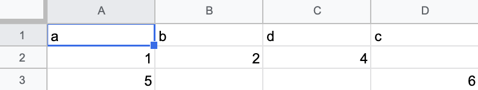
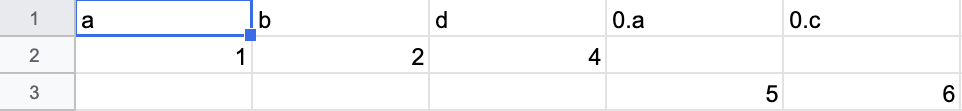

Convert JSON to CSV with Ease
How?
In my last post, I gave an overview as to how you can use my DJ chrome extension to explore a JSON document. Using the build in find-and-replace and exclude to remove a hierarchical level, etc. In this blog post, I'm going to show you a more concrete use case: converting any JSON documents (however nested) into a csv file.
Since the nature of JSON can be arbitrarily nested, it doesn't necessarily translate well into a tabular structure, such as CSV. Fortunately, since DJ chrome extension flattens all JSON paths to their corresponding Javascript assignment, converting to CSV is almost trivial.
Example
Let's say you have the following JSON
[
{
"a":1,
"b":2,
"d":4
},
{
"a":5,
"c":6
}
]
When you load the above JSON into the extension and click on download csv on the left, you'll get the csv shown below.

Another Example
[
{
"a":1,
"b":2,
"d":4
},
[{
"a":5,
"c":6
}]
]
Pretty much the same as the last example, except the second map is wrapped inside an array. By clicking on download csv, you'll get...

I have to admit. The end result is not pretty, but if you think about it, it should make sense. 0.a denotes an attribute a from a map that's inside an array that's a direct descendent of the top most level. With find-and-replace you can modify this example to remove the array from {"a" :5, "c": 6}, so that the resulting csv file is a bit more sane.
Caveats
Your JSON's top most level has to be an array. In other words, an array of other stuff.
If the JSON you are dealing with is sufficiently complicated, you might want to do some preprocessing, such as exclude, filter to narrow down to the data you care about. Otherwise, you probably have to do some clean up on the CSV file.